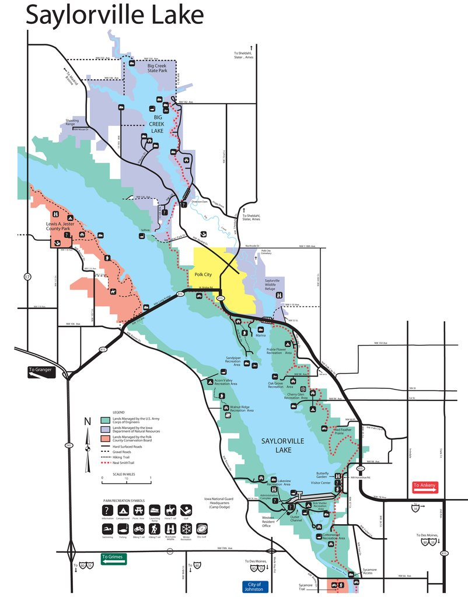

Saylorville Lake is a federally owned reservoir located in central Iowa. The reservoir is managed by the US Army Corps of Engineers to mitigate flood risk to the Des Moines metro area. I am interested in Saylorville Lake because it is one of very few public lands in the state of Iowa, and it is an excellent place to view bald eagles (by the hundreds) during winter. To see more information about Saylorville Lake, click here Saylorville Lake

